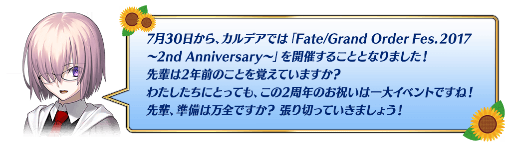
◆活動舉辦期間◆
2017年7月29日(六) 8:00～8月9日(三) 11:598月16日(三) 11:59
※延長舉辦期間。
※遊戲內的顯示中會有結束時間未變更的情況。
將會依序對應。
※(8/7修正)
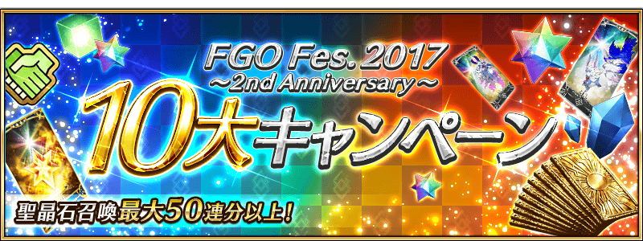
翻新後，聖晶石購入時給予的附贈無償份的聖晶石個數變更如下。
|
◆翻新實施時間◆ |
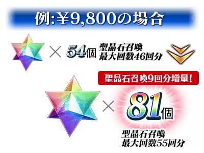 |
| 價格 | 聖晶石有償份 | 聖晶石附贈 （無償份） |
總計 | 聖晶石召喚 最大次數 |
|---|---|---|---|---|
| ￥9,800 | 86 | 54個 ⇒ 81個 | 140個 ⇒ 167個 | 46次份 ⇒ 55次份 |
| ￥4,800 | 42 | 23個 ⇒ 34個 | 65個 ⇒ 76個 | 21次份 ⇒ 25次份 |
| ￥2,900 | 25 | 11個 ⇒ 16個 | 36個 ⇒ 41個 | 12次份 ⇒ 13次份 |
| ￥1,400 | 12 | 4個 ⇒ 6個 | 16個 ⇒ 18個 | 5次份 ⇒ 6次份 |
※翻新後會有在購入時顯示對話框的商品名尚未切換的情況，但會反映附贈的無償份聖晶石增量。
|
為了記念｢FGO Fes. 2017 ～2nd Anniversary～」舉辦，實施特別登入獎勵。 ◆宣傳活動舉辦期間◆ |
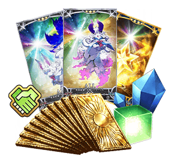 |
※第1天的登入獎勵是從7月31日(一) AM3:00配發。
※之後的登入獎勵會在AM3:00配發。
※連續登入天數中斷的話，無法領取之後的禮物。
※最多可領取7次，但根據開始遊戲的時間點，可能無法到此上限。
| 連續登入 天數 |
禮物內容 |
|---|---|
| 第1天 | 1,000萬QP |
| 第2天 | 友情點數×10萬pt |
| 第3天 | 叡智の猛火ALL★4(SR)×10枚 |
| 第4天 | 英靈結晶・太陽之芙芙ALL★3(ATK)×10枚 |
| 第5天 | 英靈結晶・星之芙芙ALL★3(HP)×10枚 |
| 第6天 | 魔力稜鏡×100個 |
| 第7天 | 呼符10枚（聖晶石召喚10次份） |
※(8/7 追記)
2017年8月2日(三)17:00以後，由於一部份Android裝置中，發生點擊標題畫面時會有畫面變白無法進行的狀況問題所影響，對特別登入獎勵中斷的玩家做出下述的贈送對應。
◆贈送對象者條件◆
條件1:裝置Android版的玩家
條件2:特別登入獎勵在8月2日(三)17:00以後中斷的玩家
◆贈送的內容例◆
對特別登入獎勵中斷的玩家，做出下述贈送。
請注意贈送內容會根據宣傳活動舉辦期間中的最初登入時間有所變化。
※已領取所有特別登入獎勵為對象外。
| 登入時間 | 贈送內容 |
|---|---|
| 7月31日(一) 3:00～ 8月1日(二) 2:59 |
第7天為止的特別登入獎勵 |
| 8月1日(二) 3:00～ 8月2日(三) 2:59 |
第6天為止的特別登入獎勵 |
| 8月2日(三) 3:00～ 8月3日(四) 2:59 |
第5天為止的特別登入獎勵 |
| 8月3日(四) 3:00～ 8月4日(五) 2:59 |
第4天為止的特別登入獎勵 |
| 8月4日(五) 3:00～ 8月5日(六) 2:59 |
第3天為止的特別登入獎勵 |
| 8月5日(六) 3:00～ 8月6日(日) 2:59 |
第2天為止的特別登入獎勵 |
| 8月6日(日) 3:00～ 8月7日(一) 2:59 |
第1天為止的特別登入獎勵 |
※關於禮物的配發時期，會在日後公告。
以期間限定舉辦的主線關卡AP消耗1/2宣傳活動，直到終局特異點為止變成永久舉辦對象。
另外，在從第一特異點到終局特異點為止的各特異點，追加聖晶石10個做為通過報酬。
通過從第一特異點到終局特異點為止的話可GET最多80個(聖晶石召喚26次份)的聖晶石！
※另外，已通過到終局特異點為止的玩家，同様也能領取通過報酬。
|
◆翻新實施時間◆ |

|
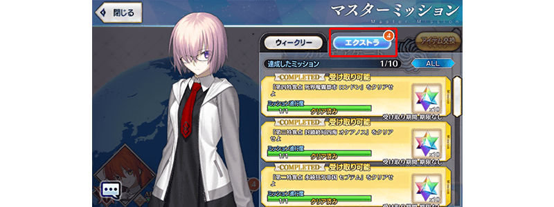
※7月31日(一)11:59前通過下述任務的情況，報酬是通過時就已領取。(7/31追記)
※對象任務如下。
・通過『炎上汙染都市 冬木』
・通過『炎上汙染都市 冬木 第三節 大橋を調べる』
※從第一特異点到終局特異点為止的報酬可正常領取「最多80個(聖晶石召喚26次份)的聖晶石」。(7/31追記)

連続登入獎勵的素材翻新成選擇式！
每日給予的「愚者の鎖」變更為「交換券」，可從3種類的素材選擇。
◆翻新實施時間◆
2017年8月1日(二) AM3:00～
※就算是翻新日，連續登入獎勵也不會重置。
會繼承舊登入獎勵的經過天數計算。
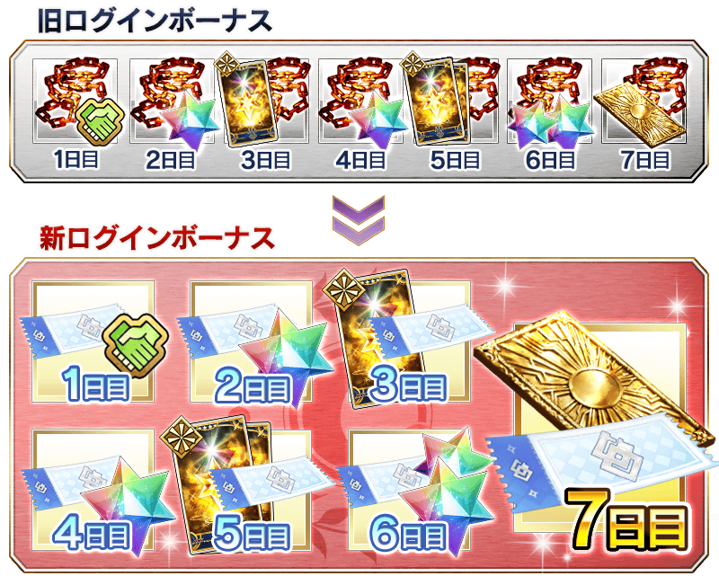
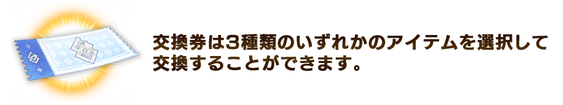
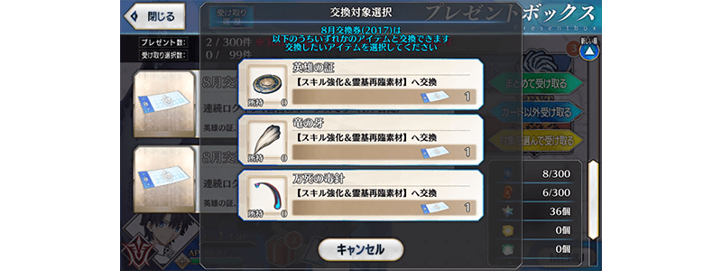
※能選擇的3種類素材每月替換。
※如果持有「8月交換券(2017」)3張等相同月份的「交換券」數張，可以將相同種類的交換券一起交換。
※請注意「交換券」有使用期限。
※如果跨月自禮物箱領取前一個月的「交換券」，能獲得的素材會是「交換券」記載月份的對象素材。
以期間限定，在迦勒底之門內以每日出現的全部曜日關卡的AP消耗量變成1/2！
◆舉辦期間◆
2017年7月31日(一) 17:00～8月9日(三) 11:59
◆對象關卡◆
寶物庫の扉開け 初級、中級、上級、超級
弓の修練場 初級、中級、上級、超級
槍の修練場 初級、中級、上級、超級
狂の修練場 初級、中級、上級、超級
騎の修練場 初級、中級、上級、超級
術の修練場 初級、中級、上級、超級
殺の修練場 初級、中級、上級、超級
剣の修練場 初級、中級、上級、超級
種火集め ＜槍・殺編＞ 初級、中級、上級、超級
種火集め ＜剣・騎編＞ 初級、中級、上級、超級
種火集め ＜弓・術編＞ 初級、中級、上級、超級
種火集め ＜隨機編＞ 初級、中級、上級、超級
※曜日關卡的詳細如下。
【寶物庫の扉開け、種火集め 關卡的難易度等】
| 難易度 | 推薦Lv | 消耗AP | 通過報酬 |
|---|---|---|---|
| 初級 | 5 | 10→5 | 魔力稜鏡ｘ1 |
| 中級 | 10 | 20→10 | 魔力稜鏡ｘ2 |
| 上級 | 25 | 30→15 | 魔力稜鏡ｘ3 |
| 超級 | 40 | 40→20 | 魔力稜鏡ｘ4 |
【修練場 關卡的難易度等】
| 難易度 | 推薦Lv | 消耗AP | 通過報酬 |
|---|---|---|---|
| 初級 | 10 | 10→5 | 魔力稜鏡ｘ1 |
| 中級 | 25 | 20→10 | 魔力稜鏡ｘ2 |
| 上級 | 40 | 30→15 | 魔力稜鏡ｘ3 |
| 超級 | 60 | 40→20 | 魔力稜鏡ｘ4 |
※關卡通過報酬的魔力稜鏡是只有初次通過時才能獲得。
由於通過報酬每週都會重置，每週不斷通過，持續入手報酬「魔力稜鏡」吧。
◆曜日關卡攻略的重點◆
参考攻略推薦職階編組隊伍，挑戰曜日關卡吧！
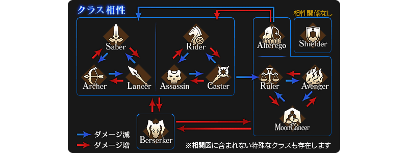
※曜日別關卡的詳細如下。
【曜日別關卡一覧】
| 曜日 | 關卡名 | 做為戰利品可獲得的主要道具 | 攻略推薦職階 |
|---|---|---|---|
| 一 | 寶物庫の扉開け
AP1/2
|
QP | |
| 弓の修練場
AP1/2 |
Archer的靈基再臨用道具、Archer的技能強化素材道具 | 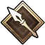 | |
| 種火集め <槍・殺編> AP1/2 |
Lancer、Assassin、Berserker的經驗值卡 | 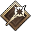 | |
| 二 | 寶物庫の扉開け
AP1/2
|
QP | |
| 槍の修練場
AP1/2
|
Lancer的靈基再臨用道具、Lancer的技能強化素材道具 | ||
| 種火集め <剣・騎編> AP1/2
|
Saber、Rider、Berserker的經驗值卡 | 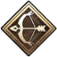 | |
| 三 | 寶物庫の扉開け
AP1/2
|
QP | |
| 狂の修練場
AP1/2
|
Berserker的靈基再臨用道具、Berserker的技能強化素材道具 | ALL | |
| 種火集め <弓・術編> AP1/2
|
Archer、Caster、Berserker的經驗值卡 | ||
| 四 | 寶物庫の扉開け
AP1/2
|
QP | |
| 騎の修練場
AP1/2
|
Rider的靈基再臨用道具、Rider的技能強化素材道具 | ||
| 種火集め <槍・殺編> AP1/2
|
Lancer、Assassin、Berserker的經驗值卡 | ||
| 五 | 寶物庫の扉開け
AP1/2
|
QP | |
| 術の修練場
AP1/2
|
Caster的靈基再臨用道具、Caster的技能強化素材道具 | ||
| 種火集め <剣・騎編> AP1/2
|
Saber、Rider、Berserker的經驗值卡 | ||
| 六 | 寶物庫の扉開け
AP1/2
|
QP | |
| 殺の修練場
AP1/2
|
Assassin的靈基再臨用道具、Assassin的技能強化素材道具 | ||
| 種火集め <弓・術編> AP1/2
|
Archer、Caster、Berserker的經驗值卡 | ||
| 日 | 寶物庫の扉開け
AP1/2
|
QP | |
| 剣の修練場
AP1/2
|
Saber的靈基再臨用道具、Saber的技能強化素材道具 | ||
| 種火集め <ランダム編> AP1/2
|
Saber、Archer、Lancer、Rider、Caster、Assassin、Berserker的經驗值卡（隨機） | - |
※Berserker在全部的曜日別關卡皆為有效職階。
在進行Servant及概念禮裝的強化時，大成功(經驗值2倍加成) ・極大成功(經驗值3倍加成)的發生機率以期間限定變成3倍。
無論如何藉此機會強化中意的Servant和概念禮裝吧！
◆舉辦期間◆
2017年7月31日(一) 17:00～8月9日(三) 11:59
對從現在開始遊戲的玩家，大幅翻新起跑衝刺宣傳活動，最多給予聖晶石召喚30次份的聖晶石與呼符、對Servant的育成有用的叡智の猛火ALL★4(SR)16張！
還有其他許多在遊戲有用的豪華道具！

◆翻新實施時間◆
2017年7月31日(一) AM3:00～
◆領取方法◆
■其1.關卡通過
通過教學後聖晶石2個、通過序章更有聖晶石10個！
可GET合計12個(聖晶石召喚4次份)！
■其2.登入獎勵
從遊戲開始，7天內登入的話GET！
登入獎勵合計:可GET聖晶石48個(聖晶石召喚16次份)、呼符10枚(聖晶石召喚10次份)、友情點數合計14,000pt(友情點數召喚70次份)、叡智の猛火 ALL★4(SR) 16枚、黄金の果実16個、100萬QP！
| 登入 天數 |
舊起跑衝刺 宣傳活動 |
新起跑衝刺 宣傳活動 |
|---|---|---|
| 第1天 | 聖晶石 1個 友情點數 2,000pt 叡智の大火 ALL★3(R) 1枚 黄金の果実 1個 |
聖晶石 1個 友情點數 2,000pt 叡智の猛火 ALL★4(SR) 1枚 黄金の果実 1個 |
| 第2天 | 聖晶石 2個 友情點數 2,000pt 叡智の大火 ALL★3(R) 1枚 黄金の果実 1個 |
聖晶石 2個 友情點數 2,000pt 叡智の猛火 ALL★4(SR) 1枚 黄金の果実 1個 |
| 第3天 | 聖晶石 3個 友情點數 2,000pt 叡智の大火 ALL★3(R) 1枚 黄金の果実 1個 |
聖晶石 3個 友情點數 2,000pt 叡智の猛火 ALL★4(SR) 1枚 黄金の果実 1個 |
| 第4天 | 聖晶石 4個 友情點數 2,000pt 叡智の大火 ALL★3(R) 1枚 黄金の果実 1個 |
聖晶石 5個 友情點數 2,000pt 叡智の猛火 ALL★4(SR) 1枚 黄金の果実 1個 |
| 第5天 | 聖晶石 5個 友情點數 2,000pt 叡智の大火 ALL★3(R) 1枚 黄金の果実 1個 |
聖晶石 7個 友情點數 2,000pt 叡智の猛火 ALL★4(SR) 1枚 黄金の果実 1個 |
| 第6天 | 聖晶石 6個 友情點數 2,000pt 叡智の大火 ALL★3(R) 1枚 黄金の果実 1個 |
聖晶石 10個 友情點數 2,000pt 叡智の猛火 ALL★4(SR) 1枚 黄金の果実 1個 |
| 第7天 | 聖晶石 7個 友情點數 2,000pt 叡智の大火 ALL★3(R) 10枚 呼符 10枚 黄金の果実 10個 100萬QP |
聖晶石 20個 友情點數 2,000pt 叡智の猛火 ALL★4(SR) 10枚 呼符 10枚 黄金の果実 10個 100萬QP |
聚集從第一特異點到第七特異點留有印象的戰鬥，舉辦『「FGO Fes. 2017 ～2nd Anniversary～」舉辦記念 回憶關卡！』！
通過在迦勒底之門內出現的「回憶關卡」，入手期間限定概念禮裝「英靈正裝」！
期間限定概念禮裝「英靈正裝」的插圖皆為特別繪製！
可從全47張之中選擇喜愛的1張入手。
另外，也有只限通過全部回憶關卡通過的Master才能參加的高難易度的回憶關卡。
◆舉辦期間◆
2017年7月29日(六) 8:00～8月9日(三) 11:598月16日(三) 11:59
※延長舉辦期間。
※遊戲內的顯示中會有結束時間未變更的情況。
將會依序對應。
※(8/7修正)
◆英靈正裝交換期間◆
2017年7月29日(六) 8:00～8月16日(三) 11:598月23日(三) 11:59
※延長交換期間。
※(8/7修正)
◆回憶關卡◆
對應主線關卡的通過狀況，會在迦勒底之門內開放各特異點的回憶關卡。
| 關卡名 | 開放條件 | 通過報酬 |
|---|---|---|
| 第一特異點回憶關卡 | 通過第一特異點 | FGO Fes. 2017英靈正裝券 |
| 第二特異點回憶關卡 | 通過第二特異點 | 呼符1枚 |
| 第三特異點回憶關卡 | 通過第三特異點 | 呼符1枚 |
| 第四特異點回憶關卡 | 通過第四特異點 | 呼符1枚 |
| 第五特異點回憶關卡 | 通過第五特異點 | 呼符1枚 |
| 第六特異點回憶關卡 | 第六特異點通過 | 呼符1枚 |
| 第七特異點回憶關卡 | 通過第七特異點 | 呼符1枚 |
| ？？？回憶關卡 | 通過第七特異點為止的回憶關卡 | 呼符1枚 |
※「FGO Fes. 2017英靈正裝券」可在各自的區域地圖畫面中點擊「活動報酬」，以及達文西工房內的「活動道具交換」中點擊活動橫幅，來交換活動道具。
※請注意期間限定概念禮裝「英靈正裝」種類會根據主線關卡的通過狀況而有所變化。
◆「FGO Fes. 2017英靈正裝券」交換對象◆
做為交換對象的期間限定概念禮裝「英靈正裝」全47張的圖像及開放條件的詳情在此
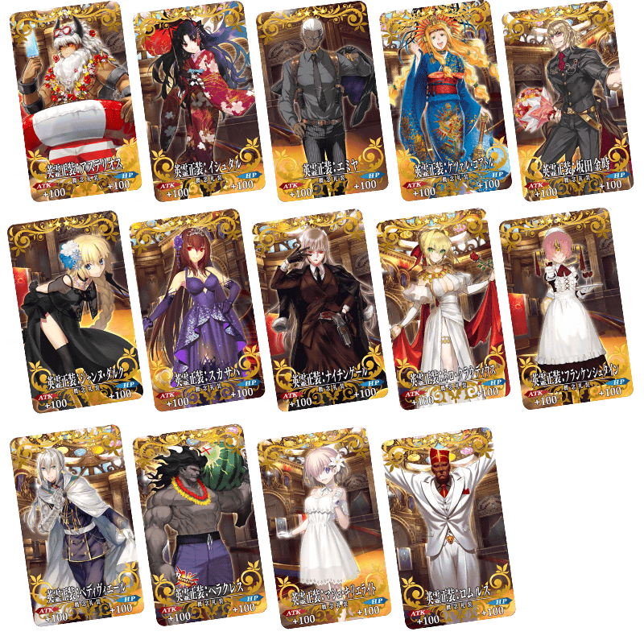
舉辦強化Servant的能力的特別關卡「Servant強化關卡」！
這次做為第7彈，合計14位的Servant為對象。
詳情請在此處的公告確認。
◆舉辦期間◆
2017年7月31日(一) 17:00～

舉辦期間限定活動「All the Statesman! ～靠漫畫了解合衆國開拓史～」！
通過活動關卡，得到期間限定Servant「靠漫畫了解Berserker」與限定概念禮裝「靠漫畫了解！FGO」吧！
活動的詳情在此處
◆宣傳活動內容發表時間◆
2017年8月2日(三) 17:00
在2016年舉辦的「FGO夏祭2016～1st Anniversary～」登場可獲得限定概念禮裝「★4(SR)アニバーサリー・ヒロインズ」關卡的復活權利，追加到達文西工房內的「稀有稜鏡交換」。
本概念禮裝「★4(SR)アニバーサリー・ヒロインズ」是使用從「稀有稜鏡交換」交換關卡的復活權利，通過在迦勒底之門再次出現的「FGO夏祭2016 記念關卡」的話就可GET！
◆「FGO夏祭2016 記念關卡」舉辦期間◆
2017年7月31日(一) 17:00～
◆｢FGO夏祭2016～1st Anniversary～」限定概念禮裝◆
| 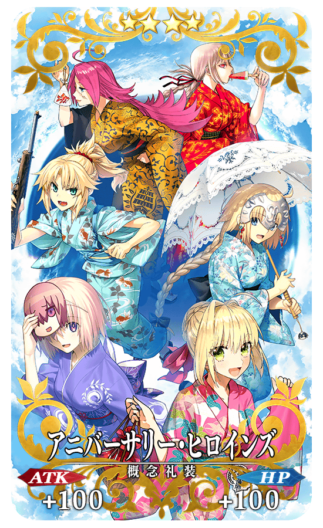 |
★★★★SR |
自MyRoom的「Master檔案」點擊「訊息變更」的話，可設定要給好友的訊息。
設定的訊息會顯示在支援選擇畫面和好友畫面中的好友Master名稱下方。
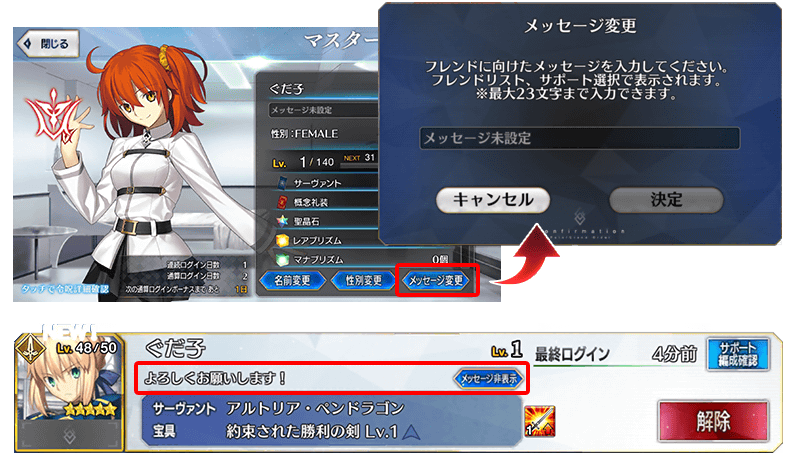
想要不顯示好友訊息的情況，只要在點擊訊息旁邊的「不顯示訊息」就能變成不顯示。
贈送在2017年7月30日(日) 12:00放送『「Fate/Grand Order」 迦勒底放送局 2周年SP』進行的特別番組連動宣傳活動報酬！
※特別番組及連動宣傳活動已結束。
◆對象期間◆
2017年7月31日(一) AM3:00 ～ 8月7日(一) AM2:598月14日(一) AM2:59
※延長對象期間。
※(8/7修正)
◆對應內容◆
聖晶石30個
◆領取條件◆
2017年7月31日(一) AM3:00 ～ 8月7日(一) AM2:59的期間中，在初次進行登入的時間點，贈送至禮物箱。
※期間內未登入的情況無法領取。
※禮物只能領取1次。